새벽 2시 45분. 미국 여행을 시작한 뒤, 최고로 이른 기상이었다. 모두가 졸린 눈을 비비며 나갈 채비를 했다. 준비를 마치고 문을 열자 시원하면서도 스산한 공기가 밀려 들어왔다(숙소 구조상 방문을 열면 바로 바깥이다). 불 꺼진 도시엔 어둠이 가라앉아 분위기를 한층 무겁게 만들고 있었고, 우리는 그 으스스함 속으로 나아가야 했다.
새벽부터 위험하게 어딜 가는 것일까?
HBO의 드라마 ‘뉴스룸’에서 윌 매커보이(제프 데이얼스)는 ‘미국이 왜 위대한 국가인지 말해달라’는 학생의 질문에 “Yosemite?"때문이냐고 비아냥댄다. 워낙 윌의 발음이 너무 찰졌던 탓일까. 학생을 떨떠름하게 만든 그 단어는 무엇일지 궁금증이 생겼다. 나는 영상을 보다 말고 바로 요세미티를 검색했다. 울창한 산림과 거대한 바위, 폭포들은 내 눈을 사로잡기에 충분했다. 핸드폰의 작은 화면으로만 봐도 굉장히 멋있었다. 이것이 나와 요세미티의 첫 만남이다. 그 강렬한 첫인상 때문에 여행 계획을 세울 때부터 요세미티는 나에게 최우선 순위 중 하나였다. 친구들에게 이곳은 꼭 가야한다며 내 마음대로 일정에 포함시켜 버렸고, 샌프란시스코에서의 하루를 통째로 요세미티에 넘겨주었으며, 비용도 많이 들어갔다. 충분히 만족할 만한 조건임에도 나는 시간과 돈이 부족해 1박2일로 못 간다는 것에 아쉬워했고, 겨울이라 통제구역이 있다는 사실에 안타까워했다. 그만큼 여행에서 중요한 메인 이벤트로 여겨진 요세미티. 우리는 밤공기를 가르며 바로 그 ‘Yosemite!’를 향해 출발했다.
전날 미리 예약해 두었던 우버를 타고 약속장소로 향했다. 현지투어를
신청한 요세미티 관광은 한국인 가이드에 더해 다른 여러 여행객들과 함께
할 예정이었다. 어떤 사람들일까 궁금하기도 하고, 처음으로 여행에서 우리
4인방 외에 다른 사람들과 함께하는 순간이라 긴장되기도 했다. 하지만
그런 생각은 얼마 지나지 않아 싹 없어졌는데, 바로 샌프란시스코의
대표적인 우범지대 ‘텐더로인’에 들어선 순간이었다. 이미 사전조사를 통해
알고는 있었지만 한 블록마다 서 있는 경찰차와 창문 위에 덧대진
쇠창살들은 이곳이 평범한 곳은 아님을 말해주고 있었다. 우버 기사님은
여러모로 묘한 긴장감에 휩싸인 우리를(적어도 나는) 텐더로인으로부터
2블록 정도 떨어진 장소에 내려주었다. 호텔 앞이어서 그런지 조명들이
비교적 환하게 빛나던 집합장소에 서서 우리가 지나온 길을 바라보았다.
얼마 떨어져 있지도 않은데 불이라고는 경찰차의 헤드라이트만이 거리를
밝히던 그곳과 내가 지금 서있는 이곳의 분위기는 너무나도 달랐다. 100m도
채 안 떨어져 있는데 아예 다른 세상이다. 해외여행을 할 땐 이처럼 한
골목만 꺾어 들어가도 길의 전반적인 분위기가 바뀌는 것을 느낄 수 있다.
예전에 일본 교토 거리를 걷다 대로에서 갈라져 나온 골목에 잠시 들어갔던
적이 있었다. 아무 생각 없이 음식점을 찾기 위해 들어간 길인데 정확히
다섯 걸음 걷고 나서 알았다. 이곳이 홍등가라는 것을. 물론 나에게 가해진
직접적인 위해는 없었으나 잔뜩 겁먹은 나와 가족들은 바닥만 보며 급히
그곳에서 빠져 나왔다. 나의 처음이자 마지막인 홍등가 투어(?)는 그렇게
끝났지만 매우 당황스럽고 섬찟한 기억으로 남아있다. 만약 우리가
텐더로인을 차가 아닌 도보로 지나왔다면 아마 일본에서보다 더 무서운
경험으로 남았을 것이다.
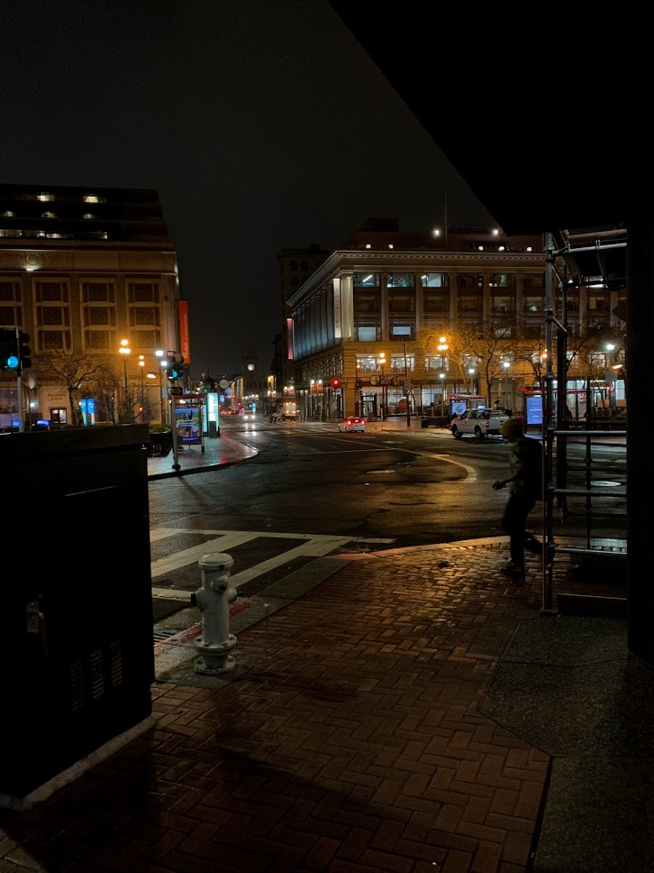
(모이기로 한 집합 장소. 새벽에 밖으로 던져진 우리가 기댈 것은 빛나는
조명과 호텔의 직원들 뿐 이었다.)
시간이 지나자 잠시 뒤 같은 차에 탈 것만 같은 느낌의 사람들이 보이기 시작했다. 어머니, 아버지, 딸 3명이서 여행 온 화목한 가족, 달달한 사랑의 추억을 남기고픈 커플, 학회 참석 차(나중에 알게 된 사실이지만) 미국에 왔지만, 남는 시간을 주체하지 못하고 혼자 요세미티를 보러 온 여성분, 주름진 얼굴이 나타내주는 늙수그레한 가이드 선생님 그리고 우리 4명이 모여 인사를 나눴다. 첫 만남의 어색함이 차 안에 감돌았지만 여행의 설렘은 그를 이겨내기에 충분했다.
여행에서 만나는 사람들의 관계는 대게 두 가지로 나뉜다. 첫 번째는 그 지역의 거주민과 여행객으로 만나는 것이다. 보통 정보를 구걸하는 쪽(여행객)과 알려주는 쪽(거주자)으로 나뉘는데, 워낙 만나는 시간이 짧기도 할뿐더러 대화의 목적도 여행에 관한 정보이기에 서로에 대해 알려고 하지 않는다. 속으로 이 사람이 어느 나라, 문화권 출생인지 정도만 대강 짐작하고 넘어간다. 해외여행을 하면서 겪는 관계는 보통 이에 속한다. 내가 살던 익숙한 공간에서 떠나 타지에 왔다면 너무나 당연하게 마주치는 것이기도 한 이 관계에서, 나는 상대방에게 내가 어떤 사람인지 보여주지 못하기에 개인으로서 많은 것을 잃어버리지만 동시에 집단의 대표성을 얻게 된다. 남에게 있어 나의 행동은 ‘이택원’의 행동으로 기억되기보다 ‘한국인’의 행동으로 각인되는 것이다. 일상에서 벗어나 어떤 꼬리표도 달고 있지 않은 자유로운 부랑자로 전락해버린 처지가 꽤 매력적이기도 하지만 그 해방감, 자유로움과 겸해 대표성으로부터 기인한 익명성이 내가 가진 전부이다. 한국인이라는 사실을 빼면 그들이 나에 대해 기억할 것이 무엇이 있겠는가. 그래서 나라 밖으로 나선 우리 같은 사람들이 여행 내내 최우선으로 애지중지 갖고 다니는 물건이 바로 여권이다. 그것을 잃어버린다면 내 뒤의 모든 백그라운드를 지우고 언제 세상에서 사라져도 이상하지 않은 nobody가 되는 것이니 말이다. 두 번째는 위의 모습처럼 공통의 목표를 지닌 탐험가로 만나는 것이다. 이들은 같은 목표(목적지)를 지니고 있고 머지않아 같은 행동(사진 찍기)을 하게 되며 투어가 마무리되면 같은 목적을 달성한 채 각자의 숙소로 흩어진다. 사람에 따라 다를 수도 있겠지만, 서로에 대해 궁금해 하기에 이름, 나이, 직업과 같은 정보를 묻고 답하며 적어도 같이 있는 시간만큼은 웃고 친해지고 즐기려고 노력한다. 집단보다 개인이 무대 위로 올라서는 순간이다. 어쩌면 그날 내가 ‘한국인 여행객’에서 벗어나 차 문을 여닫는 특수한 ‘도어맨’의 칭호를 얻은 것은 우연이 아니었을지도 모르겠다. 이러한 관계는 여행뿐만 아니라 우리 일상에서도 쉽게 접할 수 있는데, 같은 반에 모인 아이들 또는 같은 사무실에서 만난 동료들이 그 예이다. 하지만 여행과 일상에서 이 관계는 큰 차이를 보인다. 여행은 삶의 투쟁과도 같은 이해관계의 충돌에서 동떨어져 있기에 좀 더 낯섦의 긴장을 풀고 열린 마음으로 다른 이들에게 다가갈 수 있다. 겉으론 웃으면서 속으론 본인의 이익을 위해 뒤통수를 후려치는 자에 대한 걱정을 잠시 접어 둔 채 상대방의 미소에 의심 없이 답례의 웃음을 드러낼 수 있다. 그래서 차 안에서 만나는 사람들에게 첫 만남의 긴장이나 어색함보다 설렘이 더 크게 느껴졌나 보다. 이름, 나이, 직업, 고향도 서로 아직은 잘 모르는 11명의 사람들은 어느 때보다 한결 후련하게 한 차에 타고 요세미티를 향해 나아가고 있었다. 자유를 찾아 떠나온 사람들이 익명성과 그에 따른 무관심에 지칠 때쯤 무대에 올라섰다. 그곳에서 우린, 서로가 서로의 배우이자 관객이 되어 주며 그간 휑하니 비워뒀던 마음의 빈자리를 메워줄 예정이었다.
새벽의 공기를 가르며 우린 베이브릿지를 건넜다. 전날 우버에서 봤던 그
화려한 조명의 다리를 직접 건너니 기분이 묘했다. 계속해서 한때 여행지로
넣을까 고민했던 UC 버클리가 있는 오클랜드를 거쳐 한없이 동쪽으로
달렸다. 그날은 지리적 환경 때문인지 그냥 동트기 직전 새벽이라 그랬는지
안개가 엄청 심했다.(항상 안개가 자욱히 낀다는 가이드 선생님의 말씀이
있었던 것 같다.) 잠시 아침을 먹기 위해 맥도날드에 들러 맥모닝을
먹었는데 사실 나는 한국에서 맥모닝을 그리 좋아하지 않았다. 차라리
햄버거를 먹지 그걸 뭐 하러 먹나. 그러나 이곳의 맥모닝은 달랐다. 빵의
식감은 촉촉한 팬케이크 같았고 그 위로 메이플 시럽이 발라져 있었다.
빵만 달랐을 뿐인데 그 단맛이 베이컨, 해쉬브라운의 짠맛과 환상적으로
어울렸다. 미국 맥도날드에서만 먹을 수 있는 맥그리들. 빨리 한국에서도
팔아줬으면...(한국 맥도날드 관계자는 들으라!)
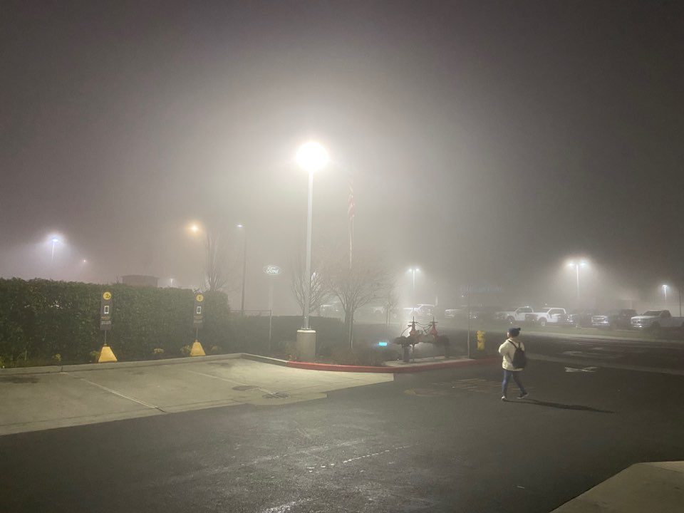
(식사 후 맥도날드 앞에서. 안개가 정말 심하다. 아, 저 하얀 패딩의
주인공은 혼자 여행오신 여성분. 저때까지만 해도 저 작은 체구의 사람이
우리의 캡틴 아메리카이자 슈퍼맨이 될 줄은 정말 몰랐다.)
점점 건물의 수가 줄어들고 광활한 대지 위 뻗어있는 길만이 눈에
들어왔다. 도시에서 시골로 풍경이 바뀌고 있었다. 때마침 하루의 태양이
모습을 드러내 이 땅에 빛을 뿌리기 시작했고 초목들과 그 사이를 달리던
우린, 그 온기를 품고 하루가 시작됐음을 느꼈다. 내가 생각했던 미국의
모습이었다. 넓은 땅덩어리, 띄엄띄엄 자리를 지키고 있는 민가들, 그 옆을
달리는 자동차.
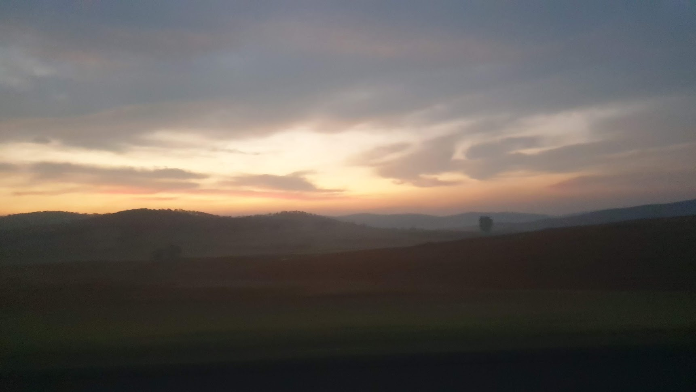
(참 넓다.)
어느덧 요세미티 입구에 도착했다. 드디어 왔다. 그동안 경험해보지 못했던
새로운 세상이 바로 앞으로 다가왔다. 짜릿했다. 꿈이 현실이 되는 순간.
그 황홀한 순간을 내 옆에 서있는 친구들과 함께할 수 있다는 것도
신기하고 기뻤다. 좁디좁은 덕이중학교 운동장에서 뛰놀던 이 4명이서 끝이
보이지 않는 미국의 요세미티까지 왔다는 사실이 새삼 놀랍다.

(2020.01.25. 07:55. Doo, Lee, Kim, Kang. 요세미티 앞에서)
요세미티에 들어선 뒤 첫 번째 뷰 포인트까지 가는 길. 가이드 선생님께서
요세미티에 관한 이런 저런 얘기를 해 주셨다. 대뜸 미국에서 1호
국립공원이 어딘지 질문을 하시길래 당연히 “요세미티!”라고 대답했으나
틀렸다. 옐로스톤이라나 뭐라나... 그 외에도 요세미티의 주요 관광지인 엘
케피탄 바위, 하프돔 등이 애플의 맥OS이름이나 노스페이스의 로고로
쓰이는 중이라는 것과 골드러쉬로 요세미티에 도착한 백인들과 토착
원주민들 간에 벌어진 마리포사 전쟁에 대해 설명해 주셨다. 골드러쉬와
이주민vs원주민 갈등은 미 서부 역사에서 빼놓을 수 없는 부분이다.
시애틀에서도 마찬가지였고 그랜드캐니언에서도 이 둘은 또 등장한다. 만약
다시 이곳에 여행을 오게 된다면 그 역사를 조금은 알아보고 와야겠다.
‘아는 만큼 보인다.’ 하지 않았는가. 마냥 멋있고 화려한 건물이나 자연일
것 같지만 이면에는 인간의 탐욕이 불러낸 비극이 감춰져 있다. 모르고
지나가기엔 그 안에 묻힌 사람의 피의 냄새가 너무나 진하게 풍겨온다.
한번쯤은 피 흘리며 쓰러져간 그들의 마지막을 기억해주는 것도 값질
것이다. 우리 또한 그들과 다를 바 없이 역사의 한 페이지 속에서 살아가는
존재들이기에, 우리 또한 미래의 누군가의 과거이기에 그렇다. 가혹한
세상의 칼날이 누구를 향한 것인지는 흘러간 시간만이 알 터. 떠나간
자들의 목소리를 그들의 무덤 앞에선 들어볼 필요가 있다. 인류애에서
솟아난 동정과 연민은 차치하고 본인의 안위를 위해서라도.가이드 선생님의
설명 중 가장 기억에 많이 남는 것은 미국인들의 자연을 향한 인식이었다.
먼저 사진을 한 장 봐보자.
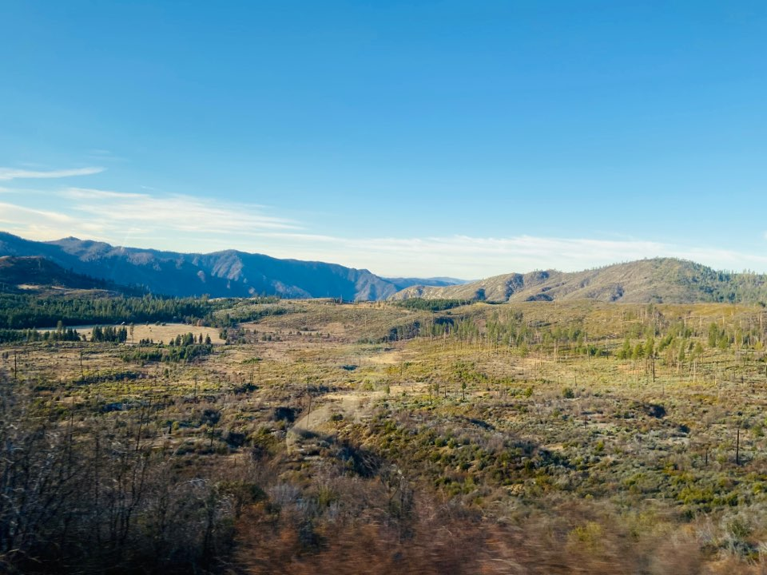
이는 요세미티 국립공원 안에 들어가면 흔히 볼 수 있는 풍경이다.
드넓은 대지 위로 초록빛을 뽐내는 나무들이 보인다. 하지만 그 앞으로는
앙상한 나뭇가지들 또는 검게 탄 나무들이 자리하고 있다. 이곳에서는
매년 자연 발화로 산불이 크게 난다고 한다. 나무에 벼락이 치며 시작된
불길은 이 넓은 땅을 숯검댕이로 만들어 버린다. 미 서부 화재에 대해선
한국에서도 많이 들었기에 그러려니 했다. 하지만 놀랐던 점은 불이 크게
나도 공원 관리자들은 억지로 불을 끄지 않는다는 것이다. 건조한 바람과
벼락으로 인한 산불은 자연의 일부라는 이유였다. 울창한 삼림을 이루는
거대한 나무들은 다른 이들에게 깨끗한 공기를 제공해 주는 허파 역할을
하지만 그 아래 막 자라나는 어린 나무들에겐 햇빛을 막는 장애물이기도
하다. 어린 나무들이 자라나지 못한다면 그 숲의 생명은 지속되기 힘들
터이니, 자연은 미래를 위해 벼락을 내려 자기 자신을 깎아낸다. 그늘이
걷히고 타고 남은 재들은 유기물이 되어 어린 나무를 성장시키고 다시
울창한 삼림을 이룬다. 관리자들은 이러한 자연의 선순환에 인간이 낄
자리도, 낄 필요도 없다는 생각인 것이다.
얼마 전 친구가 토론 과제라고 들고 온 구절이 있었다.
“인간은 자연의 일부이면서도 자연을 초월해야 하는 자신의 비극적 운명을 깨닫게 된다. 인간은 수많은 환상 속에서 죽음을 부인하려고 애쓰면서도, 죽음을 자신의 궁극적 운명으로 의식한다.”
내 과제는 아니었기에 깊이 생각해 보지는 않았지만 처음엔 그냥 그런가
보다 했다. 이래서 ‘삶’이라는 말에서 무언가 고달픔 느껴지나 보다.
내가 자연을 초월하려 했던 것이었구나. 그러다 문득 요세미티의
불타버린 들판이 떠올랐다. 황량해 보일수도 있지만 그 자체로 온전한
아름다움이 숨겨진 곳. 인간이 비극적 운명을 거부한 결과였다.
인간은 자연의 일부라는 것, 너무나도 흔히 들어온 말이다. 그러니
우리는 자연을 아끼고 사랑하며 잘해줘야 한다는 말이 뒤에 붙곤 한다.
과연 자연은 우리가 잘해줘야만 하는 대상일까? 지금까지 우린 자연을
초월하려 했던 것일까?
리처드 도킨스는 인간이 모두 유전자의
자가복제 속에서 만들어진 기계적인 존재라고 했으며, 유발 하라리는
인간이 밀(쌀)을 선택해서 재배한 것이 아니라 밀(쌀)이 인간을 선택해서
기른 것이라고 했다. 현재 지구에선 230억 마리의 닭이 상시 사육된다.
허니콤보를 위해 우리가 닭을 기른 것일까, 허니콤보를 빌미로 닭이
우리더러 자기들을 길러내라고 지시한 것일까. 이젠 누가 누굴 초월하고
아끼고 사랑해야 하는지 모르겠다. 어쩌면 인간은 자연을 지배하고
아껴야하는 주체가 아니라 이미 수 만 년 전부터 자연에게 지배당한
존재였을지도 모른다. 지배자와 피지배자로 나누기도 애매모호한 상황.
누가 누굴 아끼고 사랑한단 말인가. 요세미티의 방관자들은 이미 알고
있었다. 그들이 보기엔 산불을 끄는 것은 오만한 인간의 탐욕이자 비극적
운명을 스스로 받아들이는 것이었다. 벼락으로 인해 황량해진
요세미티에서 진정으로 불타 없어진 것은 나무도, 풀도 아닌 호모
사피엔스의 오만함이었다.
(윗글의 뒷이야기는 『LA 2일차-유니버셜 스튜디오』 편에서
계속됩니다.)
드디어 첫 뷰 포인트에 도착했다. 길가에 차를 세워두고 사진을 찍기
바빴지만 그 바쁜 와중에도 요세미티의 장관은 눈을 뗄 수가 없었다.
나무로 둘러싸인 바위산 아래 멀셰드 강이 유유히 흐르는 모습. 요세미티에
왔음이 실감이 났다.
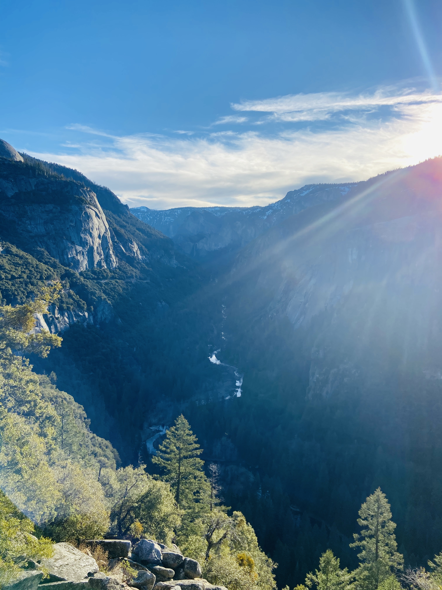
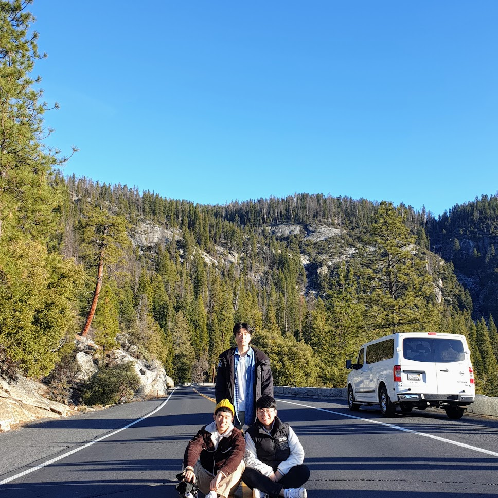
(희원이가 없어서 아쉽다. 아! 희원이한테 찍어달라고
‘부탁’했었지?)

(또 가고 싶네요.)
다시 이동하기 시작해 이번엔 요세미티의 대표 관광지인 엘 케피탄 바위를
아래에서 올려다 볼 수 있는 장소에 도착했다. 엘 케피탄 바위는 맨손 암벽
등반가들의 로망인 곳이라고 한다. 저 거대한 바위를 맨손으로
기어오르다니... 사람들도 참 대단하다. 줄을 걸고 텐트를 설치해 숙박과
등반을 겸하는 방법도 있고, 줄 없이 오직 맨손에 송진가루로 오르는
방법도 있다나 뭐라나...
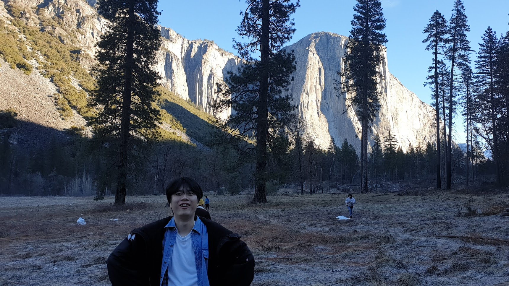
(저 뒤로 나무에 살짝 가린 거대한 바위가 엘 케피탄 바위이다. 정말
크다. 하지만 그 앞엔 그보다 더 늠름한 두장군이 있다.)

(두장군과 부하들.)
아 그리고 이곳에서 처음으로 혼자 오신 여성분(장차 우리의 히어로가 되실
그 분)과 처음으로 인사를 나누고 사진을 찍어드렸던 기억이 난다. 처음
보는 사람에게 말을 거는게 쉽지만은 않았지만 여기는 요세미티 아닌가!
멀리 왔는데 더 멋지고 예쁜 사진 남기고 싶은 것이 사람 심리일 것이다.
조금이라도 그에 도움이 되고 싶었기에 사진을 찍어드렸다. 뭐.. 마음에
들지는 나도 잘 모르겠다. 사진을 찍은 후에도 혼자서도 씩씩히 셀카봉을
든 채 열심히 구경하시던 모습이 아직도 눈에 선연하다.
이제 요세미티의 장관을 한번에 내려다 볼 수 있는 터널 뷰 포인트로
이동했다. 곧 있으면 중국인 관광객들이 버스를 타고 떼로 몰려올 것이라는
가이드 선생님의 짬에서 우러나오는 충고가 있었기에 우린 조금 서둘러
설명을 듣고 구경하며 빼놓을 수 없는 사진 남기기에 집중했다. 사진을 다
찍어가던 그 순간! 귀신같이 거대한 관광버스가 등장했다. 와우!


또 엘 케피탄 바위로 돌아왔다. 이번엔 전보다 더 가까운 곳에서 바위를 볼
수 있었다. 더욱 거대해진 엘 케피탄 바위를 등진채로 서 있으면 한 폭포가
눈에 들어온다. 떨어지는 모습이 신부의 면사포 같다고 하여 면사포
폭포라고 이름 지어진 폭포이다. 겨울이라 수량이 적어 과연 저것이
면사포일지 고개를 갸웃했지만 아니 그렇다는걸 내가 뭘 어쩌겠나. 이
외에도 요세미티엔 햇빛을 받으면 붉게 변한다 하여 말꼬리 폭포,
요세미티를 대표하는 폭포인 요세미티 폭포, 네바다 폭포 등 참 많은
폭포가 있다. 폭포가 이리 많으니 당연히 폭포에서 떨어지는 물도 많을
것이고 그 물들은 멀셰드 강을 따라 흐르거나 거울 호수에 머무르게 된다.
지금까지는 바위가 만들어낸 진풍경을 구경했다면 이젠 물이 만들어낸
아름다움을 보러 갈 차례였다.
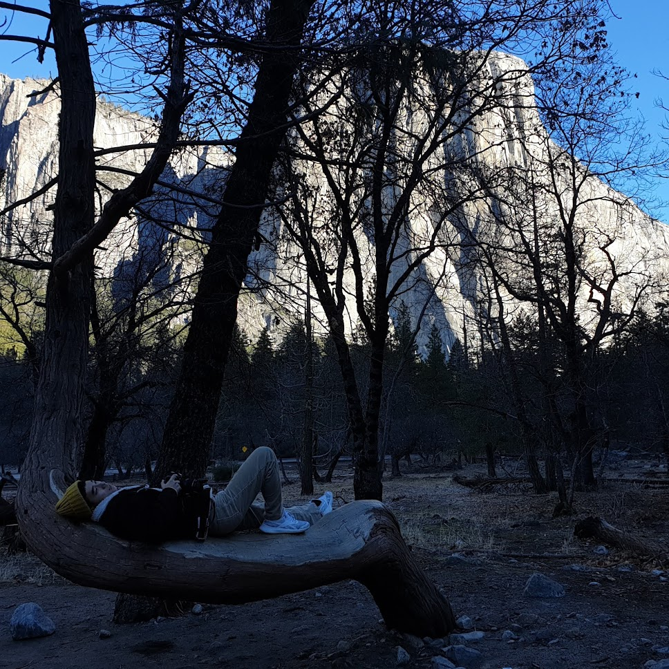
(이것이 유유자적 아니겠는가...!)
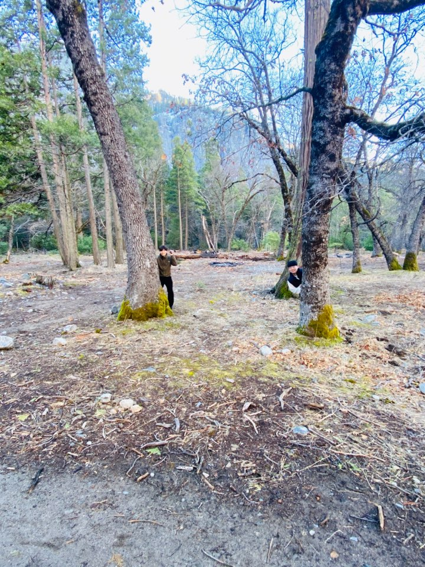
(요세미티!-(요세미티는 원래 ‘곰이다!’라는 뜻이다.))
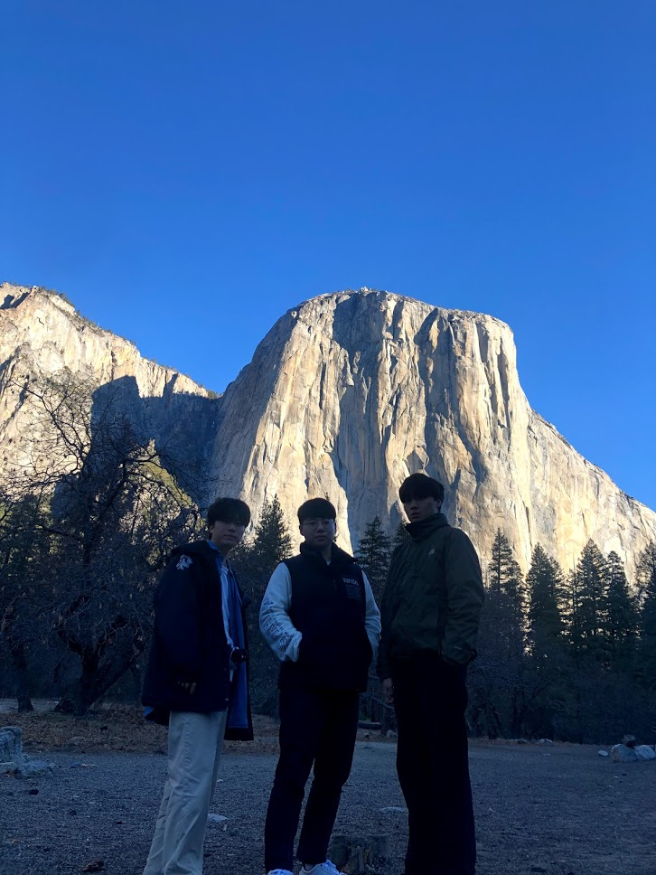
(저 바위를 어떻게 맨손으로 오르지???)
거울 호수를 보기 위해 차를 잠시 주차시키고 걷기 시작했다. 관광객뿐만
아니라 개를 데리고 산책 나온 사람들도 많이 보였다. 아 개를 데리고 여행
온 사람들이려나. 아무튼 덩치 큰 댕댕이들이 신나서 데크 위를 활보하고
있었다. 그 모습을 본 재정이는 뭐라고 중얼거렸다.
“우리 하비가 백마공원 돌 때, 얘네는 요세미티를 도네. 불쌍한 하비.”
참고로
하비는 재정이네 치와와 이름이다. 아니 뭐. 백마공원이 어때서... 동시에
나도 이 개들이 부러웠다. 하비나 나나 다를 것 없었다.
가이드 선생님과 이런 저런 얘기를 하며 우리도 데크 위를 걸었다. 우리
나이가 갓 만 20세, 21세이라는 것, 중학교 동창이라는 것, 지금은 모두
뿔뿔이 흩어져 지방에서 대학생활을 하고 있다는 것을 얘기해드렸다.
가이드 선생님뿐만 아니라 함께 일정을 같이 했던 사람들 모두 중학교
친구들끼리 여행을 왔다고 하면 좀 신기하게 바라보는 경향이 있었다.
“중학교 친구들이랑 아직도 친하네요? 신기하다~ 재밌겠어요.”
갔다
와서도 느끼는 바지만 아직도 그 중딩 꼬꼬마들이 이렇게 자라서 바다 건너
미국까지 돌고 왔는지 쉽사리 상상이 가지 않는다. ‘네. 저도 그게 참
신기해요.’

(가이드 선생님은 우리들의 얘기를 들으시더니 갑자기 한 컷
남겨주겠다며 우리를 세우셨다. 덕분에 추억으로의 매개체가 하나 더
생겼다.)
거울 호수는 말 그대로 ‘거울’ 호수이다. 마치 데칼코마니를 찍은 것처럼
실제 풍경과 물에 비친 풍경이 대칭을 이루며 장관을 연출한다. 주의할
점은 거울이 깨지면 안 되는 것처럼 물에 물결이 일면 안 되기에 장난삼아
발을 담그거나 돌을 던지지 말아야 한다는 것이다. 인생샷 하나 건지기
위해 대기하는 관광객들의 야유가 뒤따를 수도 있다. 거울 호수는 기대했던
것보다 훨씬 신기했고 아름다웠다. 실제 풍경이라기보다 누가 그림을
그려놓은 모습 같았다. 그러다 이게 실제 자연에 존재하는 광경임을 깨닫고
더 놀라게 된다. 인식과 의심의 반복. 그 결과는 환희에 찬 감탄이었다.
거울 호수 앞에서 정확히 이 생각이 들었다.
‘아...! 오길 잘했다.’
한국에 있는 가족들 생각도 좀 났다. 오늘도 어제와 같이 삶의 피로를
이겨내며 열심히 일하고 공부하고 있을 부모님과 형. 나 혼자만이
요세미티로 훌쩍 떠나 왔다. 내가 이 요세미티 거울 호수에 다다를 수
있었던 것에 그들의 희생과 배려가 없었다고는 절대 말할 수 없다.
이전부터 가족들 생각은 조금씩 났다. 시애틀의 crab pot은 누가 좋아하고
싫어할지 상상해봤고 총기 사고가 났던 날, 혹여나 뉴스로 사건을 먼저
접할까봐 마음 졸였던 때도 있었다. 그러나 이날 거울 호수 앞에서 가장
진하게, 가장 또렷이 가족들이 떠올랐다. 그만큼 호수가 멋졌기도 했지만
그리움이 커져가고 있다는 뜻이기도 했다. 다음번엔 꼭 가족들과 함께
와야겠다. 멋진 풍경을 볼 때, 맛있는 음식을 먹을 때 그들이 생각난다는
것. 함께하고 싶은 것. 멀어질수록 그립다는 것. 그게 가족이고
사랑인가보다.
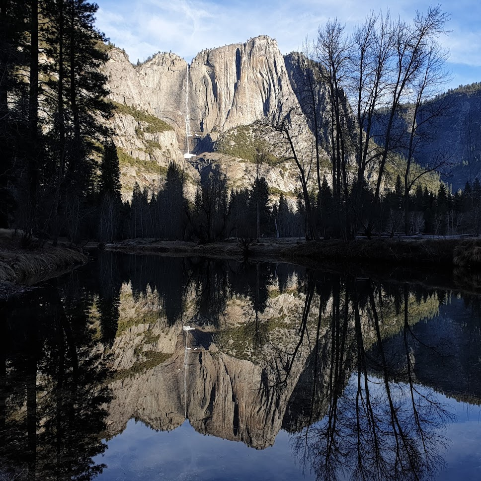
(폭포와 거울 호수에 비친 폭포.)

(창렬의 시선이 향하는 곳은...?)
짧은 코스의 트래킹(?)을 하기 시작했다. 텀블링도 하고(갑자기?) 기분
좋은 스텝도 밟고 얘기도 나누며 즐겁게 걸었다. 중간 중간 사진 찍기 좋은
장소가 나오면 가이드 선생님께서 알려주셨기에 놓치지 않고 사진도 찍을
수 있었다. 맞은편에서 걸어오는 한국인 단체 관광객들과 인사하는 재미도
있었다. 이런 곳에서 많은 수의 동양인 중에 한국인을 찾는 것은 매우
쉽다. 노스페이스같은 유명 브랜드의 등산복만 찾아라. 그의 가방에는
신라면 블랙이 들어있을 확률이 매우 높을 것이니. 시간이 흐를수록 같이
간 사람들의 친밀도도 높아지고 있었다. 이때 처음으로 그 여성분이 현재
내과의사로 삼성병원에서 근무하고 있음을 알게 되었다. 가이드 선생님께선
뭔지 모를 압력(?)을 그분께 넣고 있었다.
“끝나고 애들 밥이라도
사줘~”
물론 이땐 이런 말을 하셨는지 몰랐다. 나중에야 알았지.
우리에게도
놓치지 않고 한 말씀 남기셨다.
“나중에 밥 사 달라 해~. 저 누나 돈
많단다.”
그때야 그냥 허허 웃어넘겼지만 지금 생각해보니 어쩌면
부담으로 받아들였을지도 모르겠다. 가이드 할아버지 참 오지랖도
넓으시다.
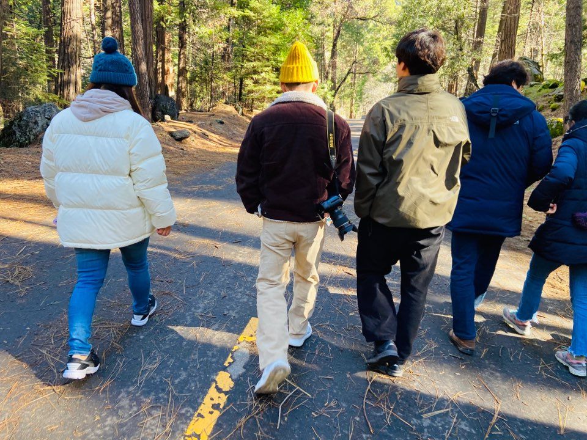
(이제는 다들 전보다 많이 붙어서 걸어간다. 길이 좁아서가
아니라 나름 서로에 대해 알고 싶었기 때문 아닐까.)
우리 중에서 이렇게 길을 걸어갈 때 가장 활발하고 재밌는 사람은 내가
봤을 때 두재정이다. 카메라만 들이밀면 가만있지 않는다. 텀블링을 하던
춤을 추던 헛소리를 하던 뭔가를 카메라와 오디오에 넣어준다. 그래서 빨리
지치는 것일지도... 덕분에 두재정의 체력을 갈아 넣어 만든 우리들의 vlog
영상은 거의 절반 이상의 분량을 그가 차지한다. 자극에 대한 반응이
확실한 친구. 지금도 심심할 때, 여행가고 싶을 때 그날의 영상을 본다.
좋은 추억거리 남겨줘 고맙다는 말 전하고 싶다.(물론 그 뻘짓 같이 해준
희, 창에게도 같은 마음이다.)

(꼭 거울 호수가 아니더라도 요세미티엔 물만 있으면 데칼코마니를
완성시킨다. 하지만 지금은 그게 중요한 것이 아니다. 갑자기 물 밖으로
솟아난 작은 돌멩이에 발을 디딘 창렬...! 과연 그의 운명은?)
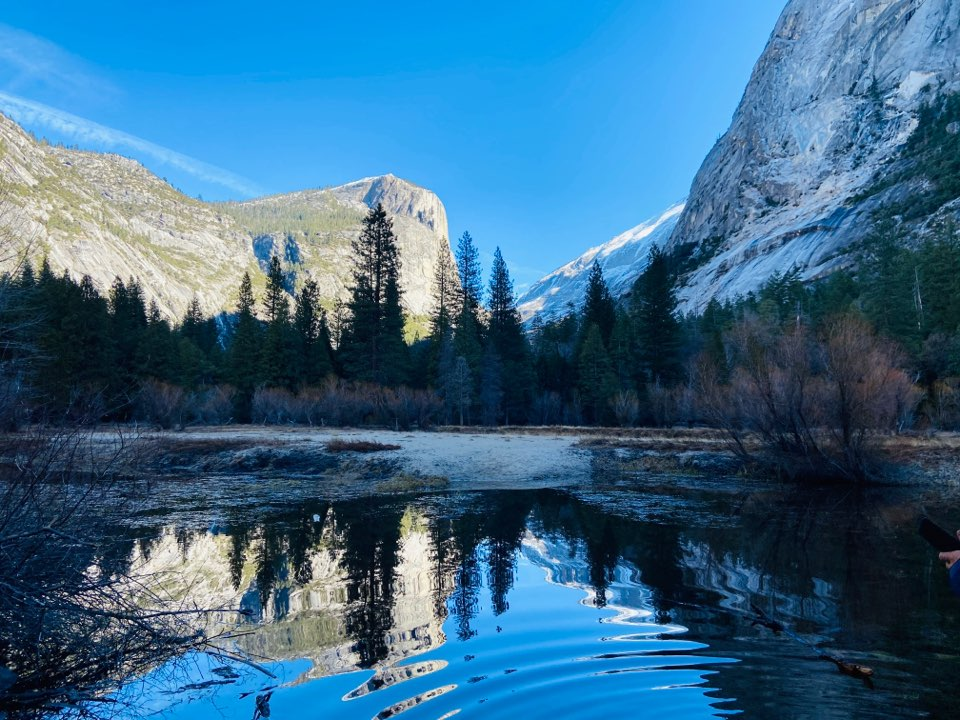
(사진으로만 봐도 공기, 물이 맑아 보인다. 물결이 일고 있다. 누가
만들어 낸 것일까?ㅎ.)
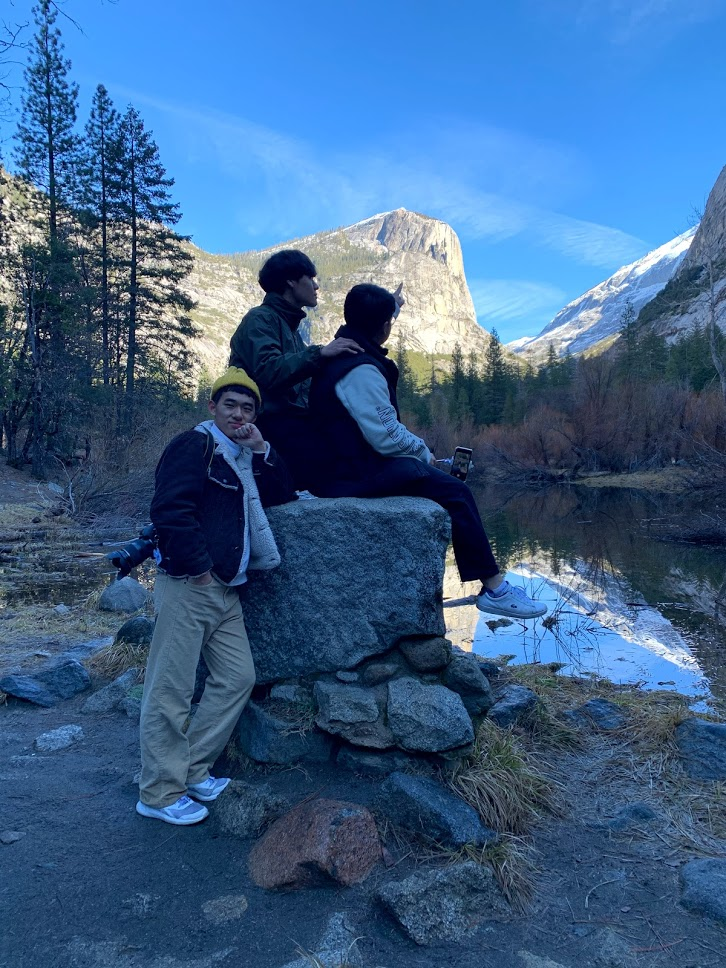
(사진도 찍고~)
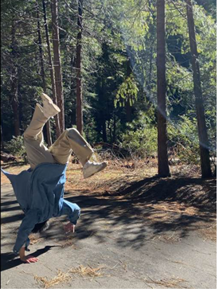
(텀블링도 하고~. Acrobatic Doo!)

(이 사진 한 장 남기기 위해 몇 번을 뛰었던가. 가이드 할아버지로부터
젊다는 이유로 강요(?)당한 우리들의 무릎. 그래도 찍길 잘했다.
잘나왔네.)
이제 점심 전 마지막 코스를 둘러볼 차례다. 아침 일찍 관광을 시작해서
그런지 많이도 돌았다. 사실 샌프란시스코에서 요세미티가 차로 왕복
7시간이기에 오후 3시쯤 다시 돌아가야 했다. 점심을 먹는다는 것은 투어가
끝나간다는 말이기에 아쉽기도 했다. 역시 하루 잤어야... 식사 전 마지막
관광지는 하프 돔 이었는데 가기 전에 요세미티 폭포를 보기로 했다.
요세미티 폭포는 말 그대로 요세미티를 대표하는 폭포인데 2016년에
미디어에서 자주 볼 수 있었을 것이다. 2016년은 미국 국립공원 시스템
100주년을 기념하는 한 해였고 바로 이 요세미티 폭포 앞에서 미국 (전)
대통령 버락 오바마가 연설을 했다. 그는 이곳에서 요세미티의 절경을
칭송했고 꼭 사진이 아닌 직접 와서 숨 숴 볼 것을 권했다. 이에 더해
올랜도 총기난사 사건을 언급하며 총기 규제의 필요성을 역설했다. 폭포
앞, 돌에는 아직도 오바마의 강연대가 박혔던 자국이 선명히 남아있다.
그의 정신이 이 요세미티에서 시작해 미국 전역에 퍼졌길 기도한다.
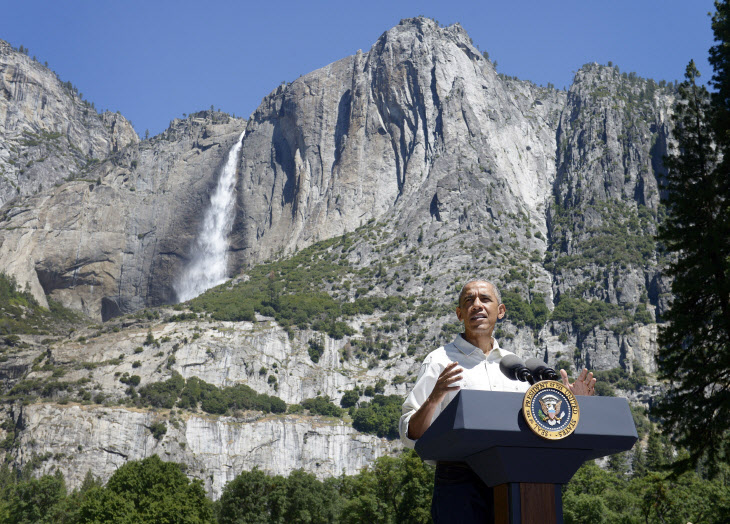
(요세미티 폭포를 배경으로 연설하는 오바마.)
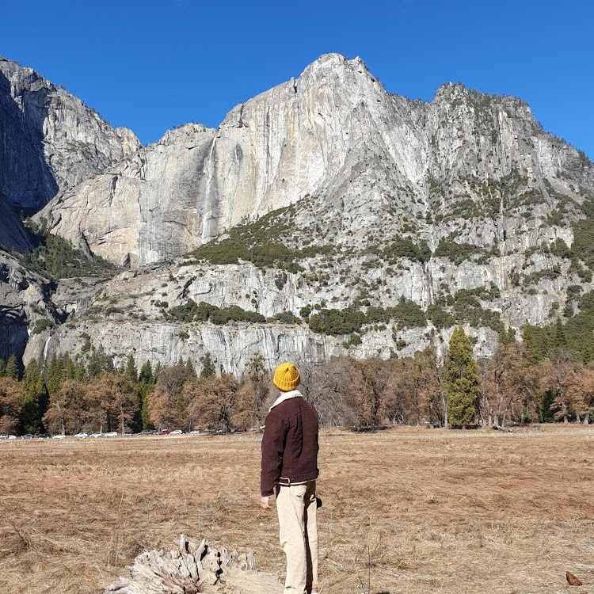
(오바마가 왔을 때는 물이 콸콸콸 흐른 거였구만... 누가 수도꼭지 잠근
것 같네.)
하프 돔은 엘 케피탄 바위와 함께 요세미티의 대표 관광지이다.
어마어마하게 큰 화강암 돔의 절반이 잘려나가 만들어진 하프 돔. 희원이의
옷에도 선명히 보이는 노스페이스의 로고는 이 하프 돔을 본 따 만들었다고
한다. 마음만 먹으면 저 바위는 일반 사람들도 올라갈 수 있도록 케이블과
발판이 설치되어 있다고 하나... 언제 한 번 아르헨티나 관광객이 올라다가
떨어져 죽었다고 한다. 그래도 한번 쯤 올라가보고 싶다. 어차피 썩어
없어질 몸. 물론 떨어져 죽긴 싫다^^.
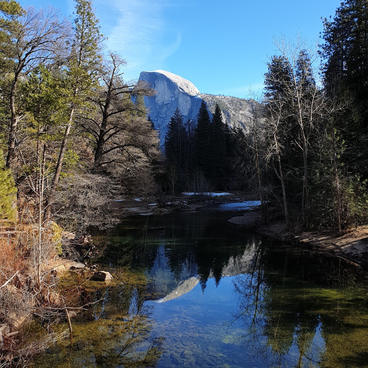
(하프 돔과 물에 비친 하프 돔. 정말 예뻤다.)
이렇게 식사 전 모든 관광을 마치고 밥 먹을 장소로 이동해 벤치에 가까워
보이는 테이블에 자리를 잡았다. 우리 일행의 점심은 식당에서 밥을 먹는
것이 아닌 야외 테이블에서 라면!을 먹기로 한 것이다. 그 어떤 도시락이나
뷔페 부럽지 않은 음식인 라면. 한국인의 영혼이자 소울. 전설의 레전드
음식인 라면. 테이블 위에 라면과 가이드 선생님 사모님의 김치, 김 그리고
밥이 차례로 올라왔다. 이 많은 것들을 모두 직접 준비해 주신 가이드
할아버지가 정말 대단했고 지금도 감사드리고 싶다. 라면은 포틀랜드에서도
먹었지만 라면 국물에 말아먹는 밥과 김치, 김은 한국을 떠나온 뒤로
처음이었다. 역시 난 한국인. 먹기 전부터 군침이 돌고 식욕이 끓어오르는
것을 느꼈다. 뜨거운 물을 붓고 3분. 어찌나 그 3분이 길던지. 시간이
되자마자 바로 뚜껑을 열고 먹기 시작했다. 10명의 가까운 사람들이 한번에
라면 뚜껑을 열었던 탓일까. 라면 냄새가 이리 저리 날뛰기 시작했다. 그
냄새는 그곳에 온 다른 한국인들의 코를 공격하기 시작했고 여기저기서
탄성이 나왔다.
“와, 저 팀은 라면 먹나봐. 부럽다...”
데헷. 정말 맛있었다. 그러게
사무엘 가이드 투어 신청하시지 그러셨어요.
무료 앞광고 만세~(이걸 보셔야 하는데 말이지.)
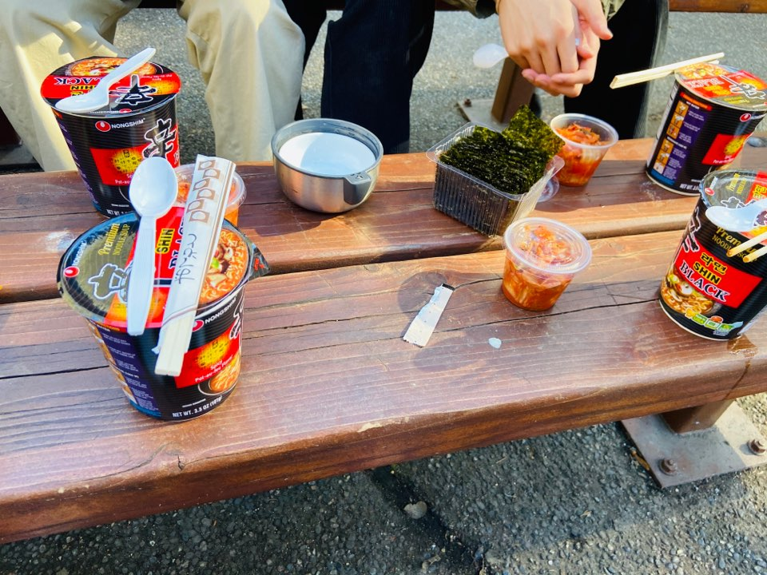
(심장이 바운스 바운스 두근대 들릴까봐 겁나~)
라면 테러(?)의 주범들은 그렇게 식사를 마쳤다. 자유시간을 얻은 우린
소화도 시키고 구경도 더 할 겸 요세미티 폭포를 산책하고 오라는 가이드
선생님의 말씀에 따라 폭포로 걸어갔다. 사람이 많아 복잡했지만 가까이서
폭포를 보니 시원하기도 하고 멀리서는 보이지 않았던 폭포의 1단, 2단을
볼 수 있었다.
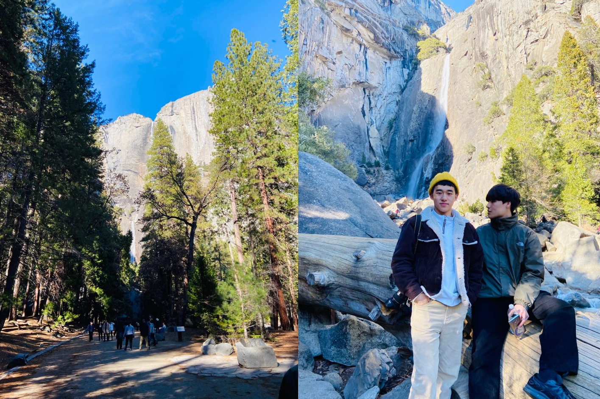
((좌)식사 후 산책 가는 길. (우)요세미티 폭포 앞에서.)
더 가까이 가보고 싶었으나 시간이 얼마 없어서 다시 돌아왔다. 아쉬움도
여행의 미덕.
이후엔 다시 엘 케피탄 바위와 면사포 폭포가 보이는 곳으로 돌아왔다. 탁
트인 들판에서 맘껏 뛰놀았고 모두들 사진 찍기에 여념이 없었다. 들판
위에 눕기도 하고 뛰기도 하고 쓰러진 나무 위에 올라타 보기도 하며
아무런 잡생각 없는 해맑은 어린아이들처럼 놀았다. 역시나 이곳에서도
우리의 무릎은 쉴 틈이 없었다.
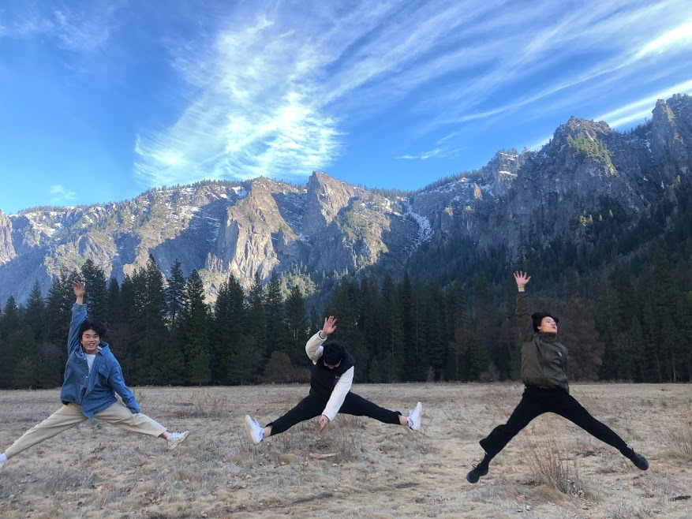
(또 뛴다. 호잇짜~)

(희원이 가오잡는거 꼴보기 싫어요. 헤헤 사랑해 희맹.)

(강캡틴 파이팅! 흐뭇하게 바라보는 창렬.)
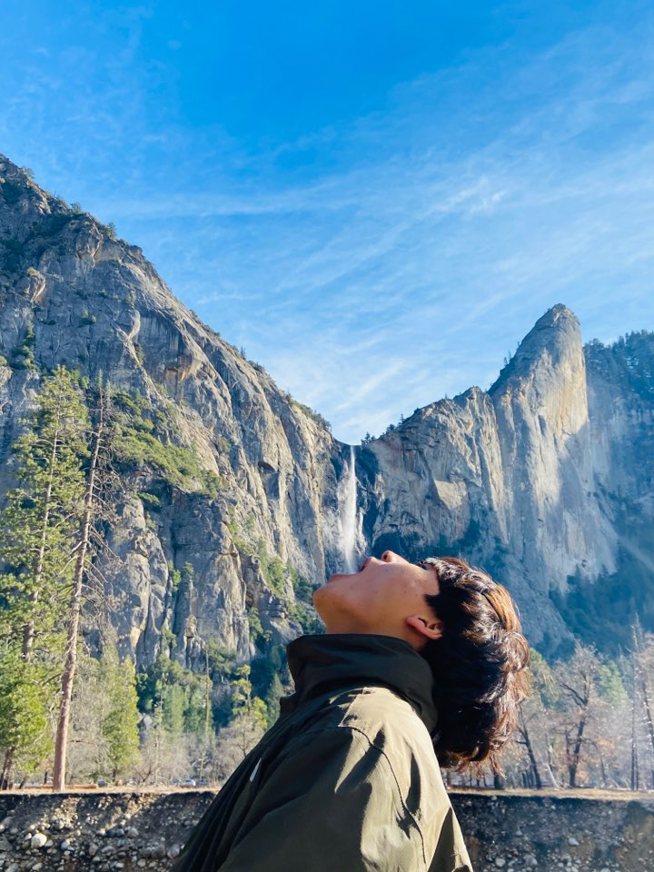
(물이 들어간다! 쭉~쭉쭉~쭉)
이젠 이 요세미티 투어의 마지막 장소이다. 벌써 돌아갈 시간이라니...
속절없이 째깍거리는 시곗바늘이 원망스러웠다. 역시 1박 2일로 왔어야
했다. 겨울이라 요세미티의 대표 뷰 포인트인 글래시어 포인트도 통제
구역이라 들어가 보지 못했다. 거대한 요세미티의 너무나도 작은 일부분만
보고 가는 듯 했다. 하지만 시애틀이 그랬던 것처럼, 포틀랜드가 그랬던
것처럼 요세미티도 마찬가지다. 우리에겐 내일의 여정이 있기에 떠나야
한다. 아쉽기에 여행이다. 익숙해지면 삶이 된다. 구속력이 생기는 것이다.
고로 떠날 수 있을 때 자유롭게 날아가야 한다. 족쇄가 채워지기 전 훌훌
털고 나아가야 한다. 오늘의 ‘도어맨’으로 살았던 나는 내일의 ‘무엇’이
될까 궁금해지기 시작했다. 불안함은 없었다. 긴장도 없었다. 이제야
여행을 온전히 즐기게 된 것이다. 그길로 요세미티를 떠났다. 또다시 쭉
뻗은 길 위에 드문드문 민가들이 있었다. 한참을 달려가며 하루를
돌아보았다. 거대한 자연의 품에서 잡념을 내려놓고 시간을 보낼 수 있었던
하루. 일상에 찌들던 눈도 폐도 마음도 깨끗하게 정화된 기분이었다. 숨이
한결 가벼웠다. 덜컹거리는 차안이었지만 그 어느 때보다도 편히
잠들었다.
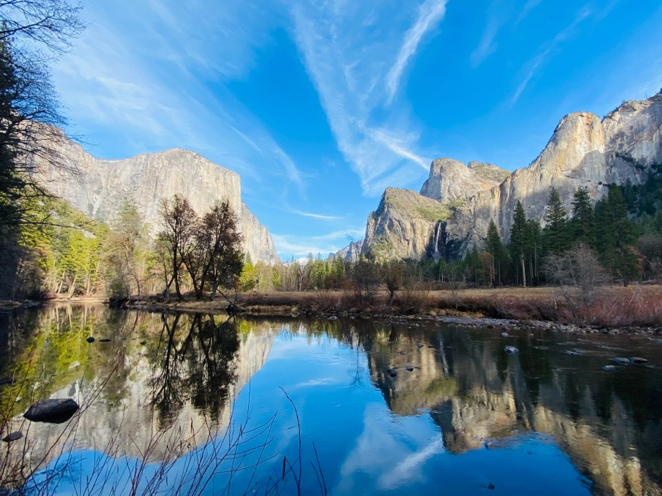
(마지막까지 즐거움과 상쾌함을 선사해준 요세미티에 감사하며 우린
또다시 달려갔다.)

(2020.01.25. 15:00. Kim, Doo, Kang, Lee. 요세미티를
나오면서.)
눈이 떠졌다. 이미 주변은 어두웠다. 여기가 어딘지 모르겠다. 우린 어디로
가고 있는 것일까? 문득 가이드 선생님의 말씀이 떠올랐다.
“팀 분위기 좋으면 트레저 아일랜드 구경시켜 줄게요~”
트레저
아일랜드는 샌프란시스코와 오클랜드 사이에 있는 인공섬이다. 캘리포니아
골드러시 때 흘러온 모래로 섬을 만들었다하여 이름이 ‘트레저’인 것이다.
사실 이곳은 내게 굉장히 계륵 같은 곳이었다. 언제 가야할지 감을 잡을 수
없었다. 야경이 유명한 곳이기에 밤에 가야 했는데 밤에 치안이 위험한
오클랜드 쪽으로 가는 것이 영 탐탁지 않았다. 이동 수단도 애매했다.
우버를 타기엔 돈이 너무 많이 나갔고 버스는 안전이나 거리 측면에서 쉽게
선택할 수 없었다. 가까스로 찾은 대안이 샌프란시스코 시티 투어
버스였는데 원래는 도착한 첫 날, 즉 어제 탈 예정이었으나... 어제 어떤
일이 일어났는지는 다들 알 것이다.(모른다면 『샌프란시스코 2일차』 편을
읽어주세요!) 그래서 언제로 다시 일정을 잡아야 할지 굉장히 고민하고
있던 찰나, 꽁으로 트레저 아일랜드를 구경할 수 있게 된 것이다. 일이 잘
풀리는 걸? 기분이 좋았다. 다행히 우리 팀은 분위기가 좋았기에 가이드
선생님께서 흔쾌히 우리를 트레저 아일랜드로 데려가 주셨다.
헤드라이트만이 길을 밝히던 어둠을 뚫고 트레저 아일랜드에 도착했다. 차
문을 열고 내리는 순간, 한기가 닥쳐왔다. 해가 모습을 감춘 탓일까. 산
속인 요세미티보다 훨씬 추웠다. 다른 사람들도 한 둘 씩 차에서 내려 앞을
바라보았다. 바다 건너 샌프란시스코의 야경이 펼쳐졌다. 예뻤다. 밤의
베이브릿지와 샌프란시스코, 바다가 어울린 모습은 요세미티 여행의
마지막을 장식하기에 전혀 부족하지 않았다. 하지만 우버나 버스 타고
왔으면 후회할 뻔 했다. 5분 서있으니 춥기도 하고 야경이야 뭐
시애틀에서부터 많이 봤기에.
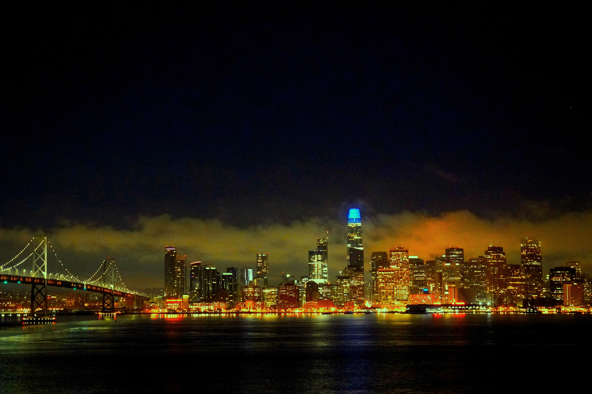
(가이드 선생님이 카메라 조작으로 예쁘게 찍어 주셨다. 트레저
아일랜드에서 바라본 샌프란시스코의 밤.)
아침에 처음 만나 출발했던 곳. 이젠 여행의 마지막을 기념하며 작별인사를
나눠야 할 장소가 되었다. 가이드 선생님께 감사 인사를 드리고 다른
사람들과도 남은 여행이 무탈하고 행복한 나날들이 되길 기원하며
작별인사를 했다. 요세미티 투어에 정말로 마침표가 찍혔음이 느껴졌다.
그렇게 숙소로 가려고 우버를 부르려던 찰나... 우리의 히어로가 말을 걸어
왔다.
“뭐 먹고 싶으세요?”
“네?”
“아 괜찮아요. 꼭 안
사주셔도 돼요. 마음만 받겠습니다.”
“아니에요. 꼭 사주고 싶었어요.
거기다 이 친구 생일이라면서요.”
그렇다. 그날은 희원이 생일이었다.
물론 한국시간으로 생일이지 미국시간으로는 생일 하루 전날이라 같이 여행
온 3명의 친구들은 생일을 쌩 까고 있었다. 친구들은 저러고 있는데, 오늘
처음 만난 그 분은 희원이에게 생일을 챙겨주려고 했다. 마음씨가 참
착하시다. 덕분에 우린 다 같이 식당으로 출발했다. 무엇을 먹을지
고민하는 것도 잠깐. 가이드 선생님이 추천해주신 샌프 피자 맛집,
GOLDENBOY PIZZA로 목적지를 정했다. 실수가 있었다 하면 걸어서 가겠다고
마음먹은 것이었다. 샌프란시스코는 오르막의 도시. 도시에 전차가 다니는
것은 장식이 아니다. 하지만 우린 두 다리를 믿고 직진을 선언. 그렇게
15분여를 오르막을 올랐다. 그래도 걷기를 선택한 덕에 그 분과 이런 저런
얘기를 하며 걸을 수 있어 좋았다. 그분은 지방 국립대 의전원을 졸업해
현재는 삼성병원 내과 전문의셨다. 교수라고하기엔 나이가 어려 보였으니
아마 펠로우(전임의) 선생님 아닐까 싶다. 누가 말했는지는 모르겠으나
내가 지방대 의대생인 것도 알고 계셨다. 이런 자리에서 인생의 선배를
만나게 되다니... 역시 미래는 한 치 앞도 알 수가 없다. 그분도 아마
요세미티에 와서 후배를 만나게 될 것이라고는 꿈에도 몰랐겠지. 그분은
학회 참석 차 교수님을 따라 샌프란시스코를 왔는데 시간이 남아 요세미티
투어를 온 것이었다. 같이 학회를 온 다른 선생님들의 행방을 물었더니
다들 호텔방에 있는 걸 좋아한다고... 학생 때부터 돌아다니는 것을 좋아해
혼자 배낭여행도 많이 다녀오셨다고 한다. 공부하기에도 바빴을 텐데
영혼이 자유로운 씩씩한 사람이었다. 친구들끼리 여행을 온 우리를 보자
옛날 생각이 나기도 하고, 본인도 당시에 우연히 만난 사람들로부터 도움을
많이 받았기에, 그 은혜를 갚는 마음으로 밥을 사주겠다고 말한 것이라는
닥터선생님. 호올리... 너무나 멋있었다. 존경의 마음도 들었고 나 또한
미래에 다른 이들에게 이 분께 받은 은혜를 나누기로 마음먹었다.
걷고 또 걸은 끝에 샌프란시스코의 이탈리안 거리에 도착했다. 이미
재정이는 배고픔에 넉아웃된 상황. 하지만 GOLDBOY PIZZA는 우리가 생각한
식당이 아니었다. 포장이 메인이었고 테이블은 몇 개 없을뿐더러 그 수도
적었다. 그리고 무엇보다 사람들이 겁나게 많이 대기하고 있었다. 아마
대기를 하면 밤 11시에나 먹을 수 있을 것 같았다. 급하게 근처의 또 다른
맛집으로 가이드 선생님이 추천해주신 Sotto Mare로 향했으나 역시나
그곳도 만석. 할 수 없이 맛집을 찾기보다 자리 있는 집을 찾아 그 옆의
이탈리안 레스토랑으로 들어갔다. 막 들어온 식당 치곤 분위기도 좋았고
서버 분들도 친절했다. 우린 인원수가 꽤 되었기에 우리만의 독립된 공간을
배정받았다. 내부에 사람이 많았지만 덕분에 번잡스럽지 않게 식사를 할 수
있어 좋았다.
자리에 앉아 파스타, 피자, 리조또를 시켰다. 가격이 좀 신경 쓰였으나
이젠 돈과 같은 세속적인 생각은 잊기로 했다. 행복하고 감사한 마음으로
식사에 임하는 것이 나의 최선이었다. 이것은 은혜를 되갚고 베푸는
아름다운 식사자리이기에 돈이 무슨 대수이겠는가! 주문한 음식이 나왔고
정말로, 진심으로, 그 어떤 때보다, 이보다 더할 수 없이 맛있게 먹었다.
뭐하나 부족함 없는 완벽한 식사. 먹으면서 내일은 어디로 가시냐고
여쭤보았다. 그분은 아쉬운 표정을 지으며 한국으로 돌아간다고 했다.
그분에겐 미국에서의 마지막 하루였다. 우린 아직도 여행이 열흘 가까이
남았기에 돌아간다는 것이 실감이 나지 않았다. 나는 ‘우리에게도 언젠가
마지막이 찾아오겠지’라고 생각하며 파스타를 먹는데 집중했다.
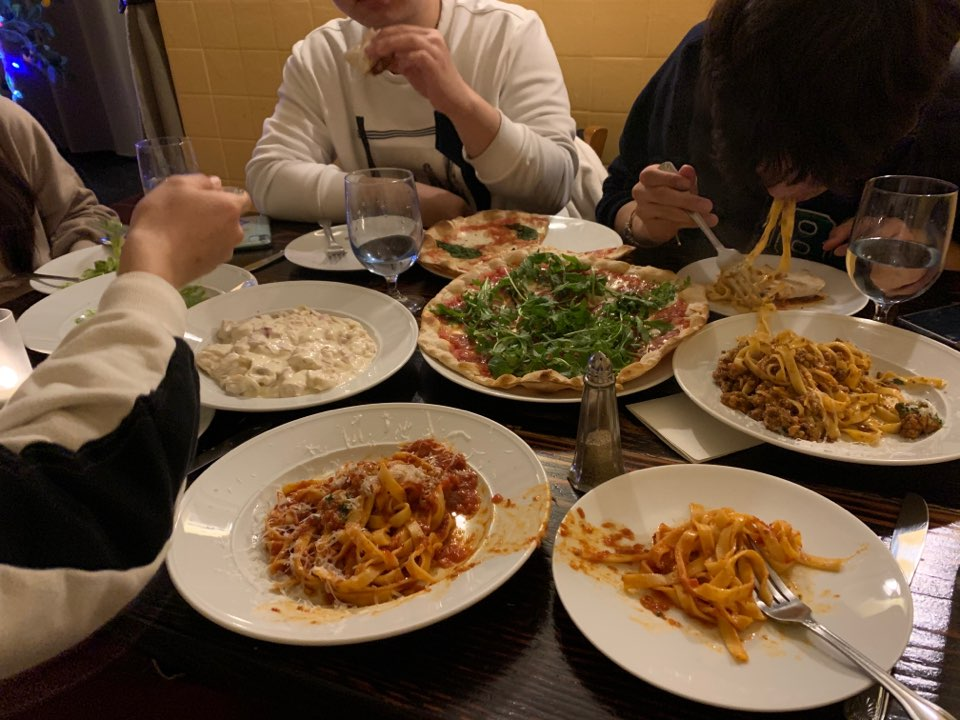
(저녁으로 정말 맛있게 먹은 음식들. 너무나 감사하고 고맙다. 나도
훗날 이날 받은 이 호의와 은혜를 다른 이들에게 베풀어줄 날이 오길
기도한다.)
식사가 마무리되어갈 즈음, 그분은 나에게 어떤 과를 전공하고 싶냐고
물으셨다. 나는 좀 활동적인 일을 할 수 있는 수술과인 외과 중 하나를
가고 싶다고 했다. 그러자 웃으시면서 본인이 일하는 내과도
활동적이라면서 항상 의학 드라마는 외과 중심으로 나온다면서 서러움을
토로하셨다.
“우리 내과도 맨날 뛰어다니고 바쁜데...”
아마
요즘 내가 심장내과에 관심이 가기 시작한건 아마 이 분의 공이 컸을
것이다. 의사 중의 의사로 불리는 내과. 이때는 몰랐지만 이후엔 모두가
알듯이 코로나19가 전 세계를 휩쓸었다. 코로나 전쟁의 최전방에서
방호복을 입고 고생했을 선생님. 한여름 무더위 속에 방호복을 입고 처치를
한다는 것은 차마 쉽게 상상이 가지도 않는다. 2020년 1월 25일은 우리
4명의 영웅이었다면 후엔 우리 모두의 백의 투사이자 영웅으로 기억될
것이다.
식사를 마치고 계산을 한 뒤 밖으로 나왔다. “아이...그래도 팁은 저희가
낼게요.”라는 말이 무색하게 팁까지 시원하게 카드로 긁으셨다. 아.
어른이란 이런 건가? 우린 아직 멀었다.
우리는 덕분에 정말 맛있게 잘 먹었다고 감사의 인사를 수차례 드렸다.
그분은 덕분에 본인도 맛있게 잘 먹었다며 끝까지 멋짐을 잃지 않으셨다.
우린 우버를 타고 숙소로 가야 했기에 식당 앞에서 작별 인사를 나눴다.
그분은 남은 여행 조심히 하라는 말을 남기고 쿨하게 뒤돌아 떠나가셨다.
그분의 걸어가는 뒷모습은 아직도 기억이 생생하다. 작은 체구로 뚜벅뚜벅
걸어가는 모습에선 거인의 아우라가 그 뒤를 받쳐주고 있었고, 거리의 모든
조명은 그녀의 후광과도 같아 보였다. 그렇게 우리들의 캡틴 아메리카이자
슈퍼맨은 더 많은 생명을 살리기 위해 일상으로 돌아갔다.
몇 개월이 지난 지금도 그때를 생각하면 감사함이 마음에 벅차오른다. 단
하루, 그날 처음 만나 이후로 지금까지 본 적 없는 사람이지만 아직도 난
그녀에게 요세미티 여행의 동반자로서 고맙고 감사하다. 그리고 인생의
선배로서, 인생의 지향점으로서, 삶의 모범으로서 그녀를 존경한다.
<요세미티 여행, 끝>